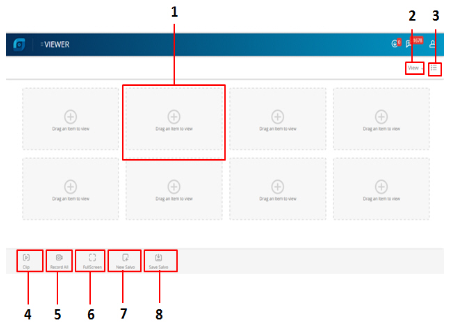

下图显示了查看器选项卡。
屏幕上显示了下述组件。
| 编号 | 字段 | 描述 |
| 1 | 剪辑显示 | 基于网格选择，在多个网格中显示剪辑。您可以选择一个或多个剪辑来捕获快照、进行录制或全屏查看。 |
| 2 | 视图 | 显示用于选择“查看器”选项卡中的网格结构外观的选项。 |
| 3 | 显示/隐藏选项 | 显示以下三个选项：<> a. 通用列表：显示所有客户、地点、组和设备。<> b.序列：显示已登录用户帐户下的所有序列视图。<> c. 警报：显示已登录用户帐户下的所有实时警报。 |
| 4 | 剪辑 | 显示用于捕获实时或录制的视频帧并将其用作图像的选项。 |
| 5 | 录制全部 | 显示用于为连接到 MPC 的摄像头录制视频的选项。 |
| 6 | 全屏 | 显示用于查看满屏剪辑显示的选项。 |
| 7 | 新序列 | 显示用于创建新序列的选项。序列布局框用来排列视频显示面板。选择“查看器”选项卡时，可以查看序列布局框。 |
| 8 | 保存序列 | 选择实时视图或根据您的首选项定制的序列布局框来创建序列视图。您可以选择要频繁查看视频的摄像头和扫描序列，并将这种序列布局框保存为序列视图。 |